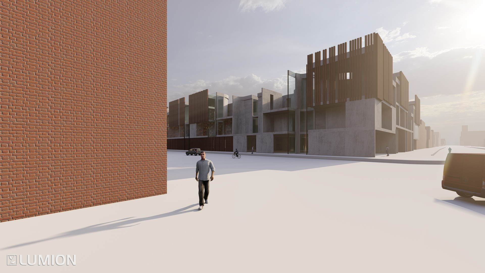
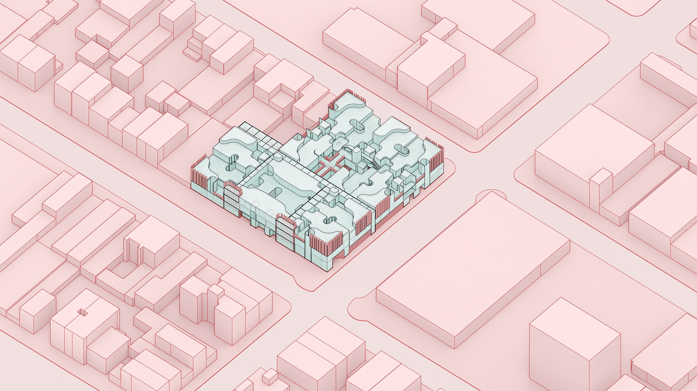
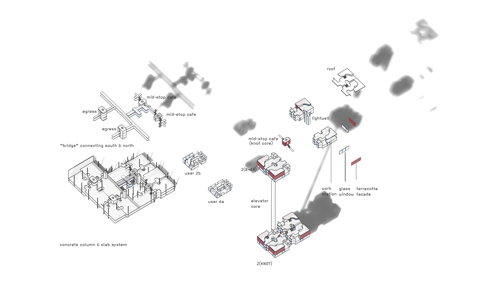
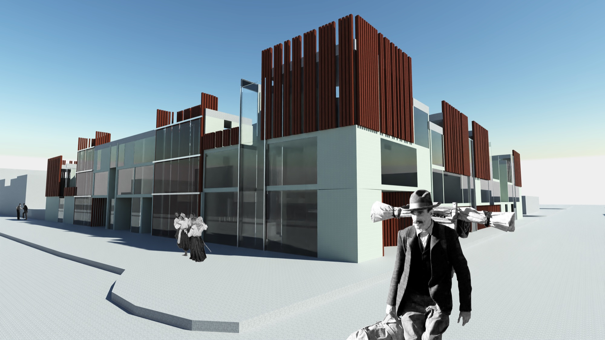
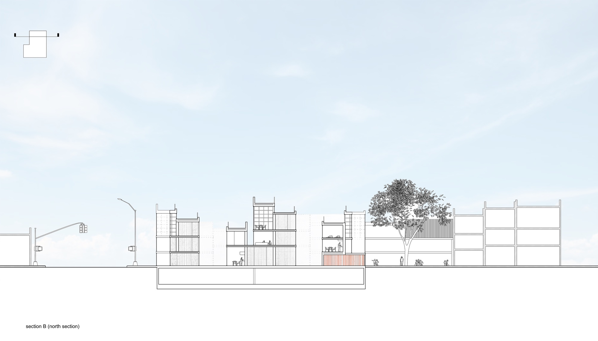

Projects
This project was accomplished during the lockdown in 2020, as a reaction to confinement at home. It explores the definition of "hug" — bào (抱) — both linguistically and architecturally.
"Hug" as a verb describes a human interaction happening in a co-living housing complex; it also generates architectural operations. Communal spaces like the kitchen are defined as the unit's front, whereas individual spaces like bedrooms are the unit's back. When the units are hugging each other, walls in communal spaces disappear and two volumes flow into one; they work as a terminal for movements, whereas the back walls double up. The change in wall thickness plays with permeabilities and occupants' senses — thinner walls allow sound to penetrate from one space to another, whereas thicker walls trap sound inside.


Site axon — Neo-Knot and Knot clusters in Brooklyn block context.

Neo-Knot (typical unit) — connected by communal kitchen in the middle. Knot — connected by a communal café.

Exterior render — terracotta panel and glass facade system.

Section B (north section) — vertical arrangement of units, communal spaces, and landscape.
Return to Projects